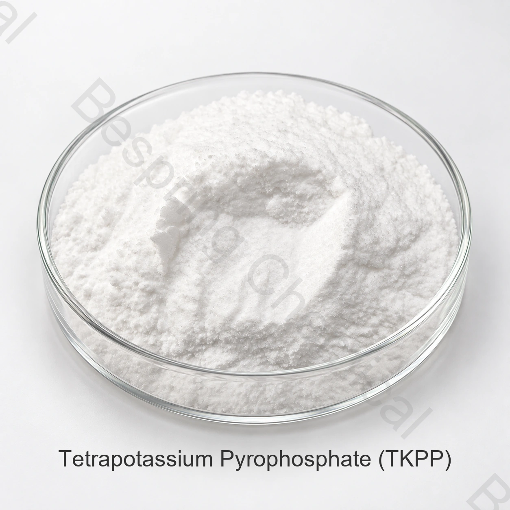

الأسمدة (المورد)
يرجى تحديد الهوية والدرجة والتحليل المضمون والشكل والتطبيق والكمية والتعبئة والوجهة.
فوسفات بدرجة سمادية
بيروفوسفات رباعي البوتاسيوم ملح فوسفاتي مكثف قلوي واسترطابي قابل للذوبان. يتطلب تقييمه لتركيبات الأسمدة المتخصصة مبرراً زراعياً واختبارات توافق ووثائق الاستخدام في سوق الوجهة.
اذكر التحليل المضمون والشكل واستخدام السماد والكمية والوجهة والوثائق المطلوبة.

نبذة مباشرة عن المنتج
بيروفوسفات رباعي البوتاسيوم ملح فوسفاتي مكثف قلوي واسترطابي قابل للذوبان. يتطلب تقييمه لتركيبات الأسمدة المتخصصة مبرراً زراعياً واختبارات توافق ووثائق الاستخدام في سوق الوجهة.
لا يمثل اسم TKPP درجة سمادية موحّدة. اطلب تحليل P2O5 وK2O والأس الهيدروجيني والشكل والمواصفة الحالية للدرجة المعروضة. لا يحدد الاسم الكيميائي وحده الدرجة أو ملاءمة المحصول أو تسجيل السماد.
دليل المشتريات
استخدم معايير الشراء التالية عند مقارنة الموردين والمصنعين وعروض التوريد بالجملة.
يرجى تحديد الهوية والدرجة والتحليل المضمون والشكل والتطبيق والكمية والتعبئة والوجهة.
قارن المواصفة وأساس التحليل والتعبئة وتصنيف النقل وشروط التجارة ومدة التوريد.
للاستخدامات الملائمة، قيّم الذوبان والمواد غير الذائبة وتوافق مياه المصدر وتركيز المحلول الأم وبرنامج المحصول.
اطلب المواصفة الحالية وشهادة التحليل ونشرة السلامة والمستندات الخاصة بالمصدر.
تقييم التطبيقات
وهذه مجالات للتقييم الأولي، وليست توصيات عالمية بشأن المحاصيل، ومعدلات المغذيات، أو الموافقة على البطاقات التعريفية، أو النتائج الزراعية المضمونة.
قيّم تركيبات الفوسفور والبوتاسيوم المتخصصة القابلة للذوبان بالرجوع إلى المواصفة الحالية وخطة المحصول والتربة وتجارب التركيبة ومتطلبات سوق الوجهة.
تقييم اختبارات التركيبة التي تتطلب فوسفاتاً مكثفة مقابل المواصفات الخاصة الراهنة، وخطة المحاصيل والتربة، واختبارات التركيبة، ومتطلبات سوق المقصد.
استخدم مياهاً وتركيزاً ودرجة حرارة ومدة احتجاز ممثلة، وسجّل صفاء المحلول والرواسب والتركيب طوال الاختبار.
احصل على مراجعة محلية لبرنامج المحصول وبيان المنتج والاستخدام المصرح به، وافصل أعمال تطوير التركيبة التجريبية عن أي توصية عامة للأسمدة.
الاختيار التقني
قيّم هوية بيروفوسفات رباعي البوتاسيوم وأساس المحتوى الفعّال بالرجوع إلى المواصفة الحالية وخطة المحصول والتربة وتجارب التركيبة ومتطلبات سوق الوجهة.
قيّم بيان P2O5 وK2O والأس الهيدروجيني (pH) للمحلول بالرجوع إلى المواصفة الحالية وخطة المحصول والتربة وتجارب التركيبة ومتطلبات سوق الوجهة.
قيّم الاسترطاب والتخزين وترسيب الأيونات غير المتوافقة بالرجوع إلى المواصفة الحالية وخطة المحصول والتربة وتجارب التركيبة ومتطلبات سوق الوجهة.
اطلب مبرراً زراعياً ووثائق استخدام السماد ذات الصلة بسوق الوجهة. ولا تفترض أن الاستخدام الغذائي أو الصناعي يثبت الملاءمة للمحصول.
الوثائق الفنية
اطلب من فريق المبيعات المواصفة الحالية الخاصة بالمصدر أو ورقة البيانات الفنية (TDS)، مع إصدارها وطرق التحليل ومعايير قبول الدفعات.
اطلب المواصفة الحالية أو ورقة البيانات الفنية (TDS)، وصحيفة بيانات السلامة (SDS)، وطرق الاختبار، وشهادة تحليل نموذجية وشهادة تحليل الدفعة (COA).
تحقق من الهوية والتركيز والشكل والمواصفة ومدى الملاءمة للتطبيق المقصود.
الاستعراض توجيهات منظمة الأغذية والزراعة بشأن التغذية النباتية, إرشادات مواصفات الأسمدة الصادرة عن منظمة الأغذية والزراعة و سجلات الهوية الكيميائية في PubChem- لا تزال الملاءمة الزراعية وتسجيل الأسمدة محصولا وتربة وتركيبا وولاية قضائية محددة.
ملاحظة زراعية: تُحدد معدلات المغذيات وملاءمة المحصول وفق التقييم الزراعي والقواعد المحلية، وليس من اسم المادة وحده.
التخزين والمناولة
أسئلة مشتري الأسمدة
بيروفوسفات رباعي البوتاسيوم ملح فوسفاتي مكثف قلوي واسترطابي قابل للذوبان. يتطلب تقييمه لتركيبات الأسمدة المتخصصة مبرراً زراعياً واختبارات توافق ووثائق الاستخدام في سوق الوجهة. يُحدد الاستخدام وفق اختبارات التربة أو الأنسجة والمشورة الزراعية والقواعد المحلية.
لا يمثل اسم TKPP درجة سمادية موحّدة. اطلب تحليل P2O5 وK2O والأس الهيدروجيني والشكل والمواصفة الحالية للدرجة المعروضة.
تتوفر المواصفة الخاصة بالمصدر من فريق المبيعات عند الطلب. اطلب طرق التحليل وشهادة تحليل نموذجية قبل اعتماد الدرجة.
لا يحدد الاسم الكيميائي الدرجة. تختلف الاستخدامات المقصودة ووثائق الجودة وضوابط الشوائب والمتطلبات التنظيمية بين الدرجات السمادية والغذائية والتقنية.
حدّد الهوية والشكل والتحليل المضمون والتطبيق والحدود الحرجة والكمية والتعبئة والوجهة ووثائق التسجيل وشرط Incoterm وموعد التسليم المطلوب.
الموارد ذات الصلة
تصفح الفوسفات وأملاح البوتاسيوم للأسمدة
ناقش المواصفة والوثائق والعينات والمتطلبات التجارية.
تعرّف إلى خدمات التوريد ودعم التصدير للمشترين الدوليين للمواد الكيميائية.
موارد الأسمدة التي تقودها المواصفات
اذكر التحليل المضمون والدرجة والشكل والاستخدام والحدود الحرجة والكمية والتعبئة والوجهة وقائمة الوثائق.